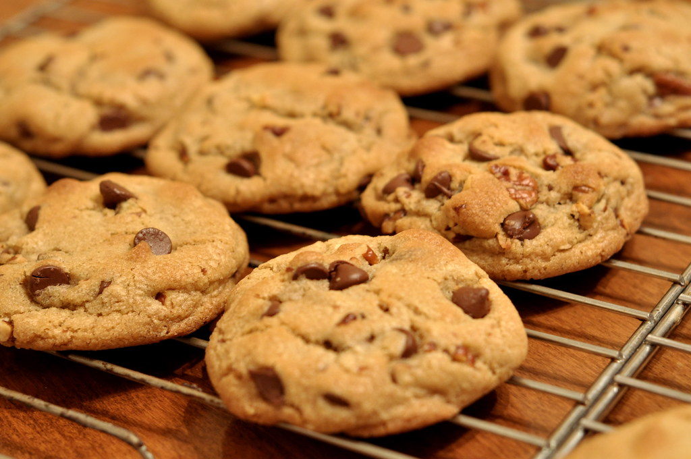

Slow Cooker Lasagna
Home

Image of Chocolate Chip Cookies
alt="Picture of slow cooker lasagna" height="100" width="100">
This slow cooker lasagna layers browned ground beef in a seasoned tomato
sauce with uncooked lasagna noodles and a mixture of mozzarella,
cottage, and Parmesan cheeses, all assembled directly in the slow cooker.
It cooks slowly over several hours, allowing the noodles to soften and
the flavors to meld into a rich, cheesy, and hearty one-pot version of
classic lasagna.
Ingredients
- 1 cup butter, softened
- 1 cup white sugar
- 1 cup packed brown sugar
- 2 large eggs
- 2 teaspoons vanilla extract
- 1 teaspoon baking soda
- 1/2 teaspoon salt
- 3 cups all-purpose flour
- 2 cups semisweet chocolate chips
- 1 cup chopped walnuts
Directions
-
Gather your ingredients, making sure your butter is softened, and
your eggs are room temperature.
-
Preheat the oven to 350 degrees F (175 degrees C). Beat butter,
white sugar, and brown sugar together in a large bowl with an
electric mixer until smooth and creamy.
-
Beat in eggs, one at a time, then stir in vanilla.
-
Dissolve baking soda in hot water; add to batter along with salt
and mix until combined.
-
Stir in flour, chocolate chips, and walnuts until a soft dough forms.
-
Drop rounded spoonfuls of cookie dough 2 inches apart onto ungreased
baking sheets.
-
Bake in the preheated oven until edges are lightly browned, about
10 minutes.
-
Cool on the baking sheets briefly before transferring to a wire
rack to cool completely.
-
Store in an airtight container or serve immediately and enjoy!